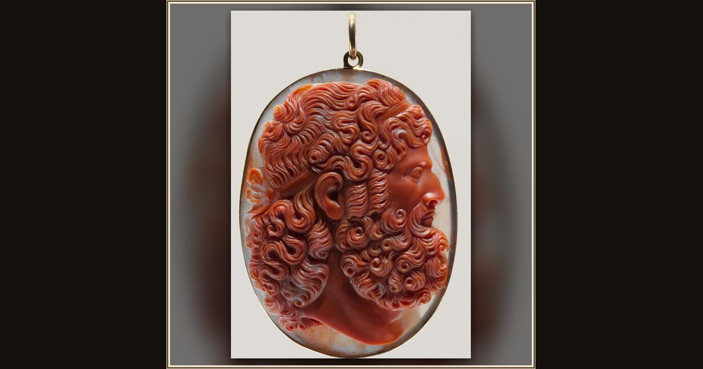

Head of Poseidon
Unknown (no maker or culture given by the museum) · probably late 18th century · met
An onyx cameo carved with the bearded, curly-haired head of Poseidon, the Earth-shaker who watches the battle from the peak of Samothrace (13.10–14). Explore its place in Homer's Iliad, Book XIII, line 12.